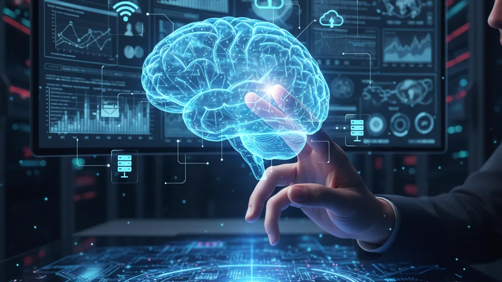
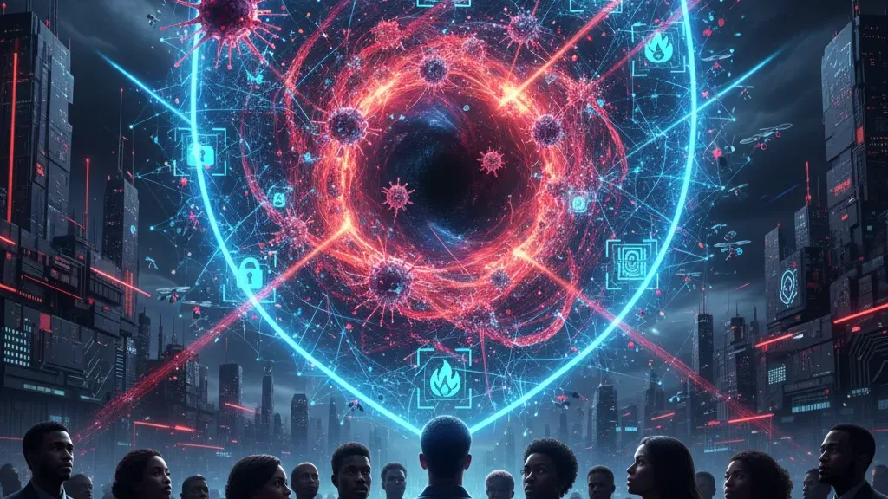
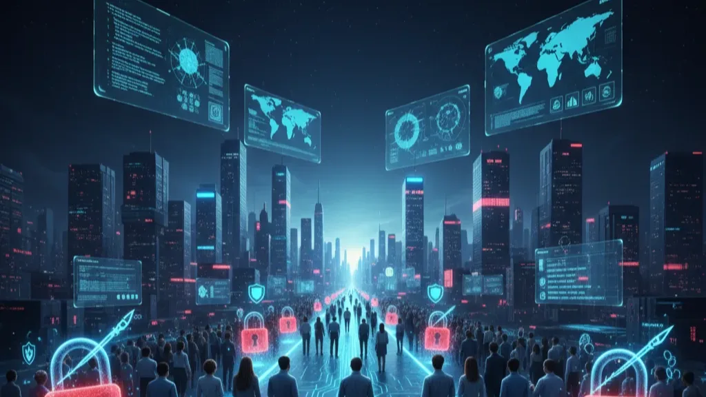
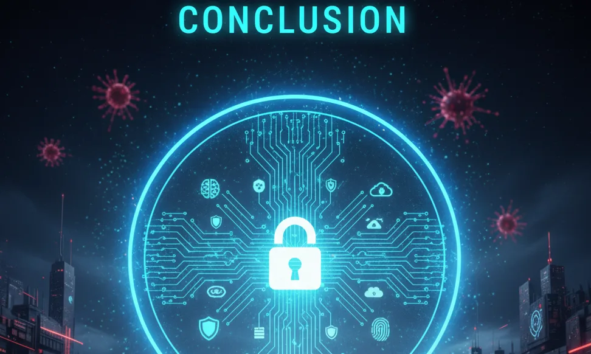

The world is more connected than ever before, and artificial intelligence (AI) sits at the center of this digital revolution. From virtual assistants and recommendation engines to automated healthcare and self-driving cars, AI is embedded into daily life. But as AI powers progress, so do the risks. In 2025, cybersecurity in the age of AI has become one of the most urgent challenges for businesses, governments, and individuals alike.
🤖 AI as Both Shield and Sword
AI is transforming cybersecurity on two fronts. On the defensive side, AI-powered systems can detect threats faster, analyze massive amounts of data, and even predict attacks before they happen. Machine learning algorithms identify suspicious patterns in real time, stopping ransomware, phishing attempts, or fraudulent transactions more effectively than ever.
But the same technology is also being weaponized by hackers. Cybercriminals are using AI to create deepfakes, voice clones, and adaptive malware that can outsmart traditional defenses. Automated attack systems can scan for vulnerabilities, break weak passwords, and even adjust their strategies mid-attack — making them more dangerous and harder to stop.
🕵️ The Rise of AI-Powered Threats
The most concerning AI-driven cyber threats in 2025 include:
Deepfake Scams → Fraudsters use hyper-realistic fake videos or audio to impersonate CEOs, politicians, or even family members.
Adaptive Malware → Viruses that learn from defenses and evolve to bypass them.
Automated Phishing → AI-generated emails and messages that are nearly indistinguishable from legitimate communication.
AI-Driven Social Engineering → Hackers leveraging personal data to craft ultra-convincing attacks targeting individuals and organizations.
These threats blur the line between reality and deception, forcing people to question what they see and hear online.
🌐 Why This Matters to Everyone
Cybersecurity is no longer just an IT department’s responsibility — it affects everyone. A single successful attack can compromise millions of personal records, drain financial accounts, or disrupt critical infrastructure. As AI becomes a bigger part of banking, healthcare, and government services, the stakes are higher than ever.
For individuals, it means being cautious about online interactions, verifying sources before trusting them, and strengthening personal digital hygiene. For businesses, it requires investing in AI-driven security systems, employee training, and zero-trust frameworks. And for governments, it demands global cooperation to establish AI ethics, cyber laws, and international defense strategies.
⚠️ The Challenges Ahead
The cybersecurity landscape in the AI era isn’t just technical — it’s ethical and legal too. Who is responsible if an AI-generated deepfake sparks violence or spreads misinformation? How do we hold cybercriminals accountable when their attacks are automated and nearly impossible to trace? And perhaps most urgently, how do we build trust in digital systems when deception is becoming indistinguishable from truth?
Without stronger regulations, advanced detection tools, and global collaboration, the risks could spiral out of control. Cybersecurity in the AI age is not simply about protecting data — it’s about protecting democracy, privacy, and the very fabric of trust in society.
🔮 The Road Ahead
AI will continue to evolve — and so will cyber threats. But if used responsibly, AI can be humanity’s strongest ally in defending against digital dangers. Smarter algorithms, quantum-resistant encryption, and international cooperation will form the backbone of tomorrow’s cybersecurity.
The future of cybersecurity in the age of AI will be defined not just by who has the most powerful tools, but by who uses them wisely. As we step into this new era, one truth stands out: the battle for digital security will be the defining conflict of our connected world.
🏁Conclusion
The age of AI has unlocked extraordinary possibilities, but it has also created equally extraordinary risks. Cybersecurity is no longer just about installing antivirus software or updating firewalls — it’s about protecting truth, trust, and the future of digital society. As AI reshapes how we work, communicate, and live, the responsibility falls on individuals, businesses, and governments to adapt quickly and act wisely.
The reality is simple: the same intelligence that powers progress can also fuel chaos. The challenge for humanity is not to slow down innovation, but to build resilient safeguards, ethical frameworks, and global cooperation that ensure AI strengthens security rather than undermines it.
If we succeed, AI will become our strongest guardian against cybercrime. If we fail, the very technology meant to empower us could turn into the sharpest weapon against us. The choice, as always, lies in how we use the tools we create.